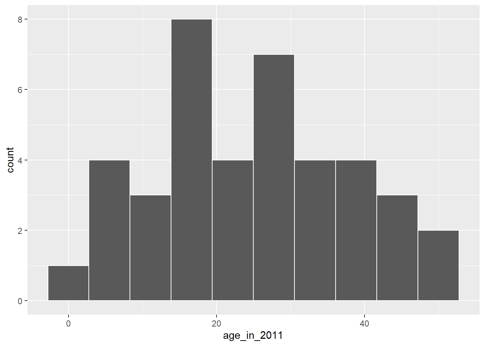
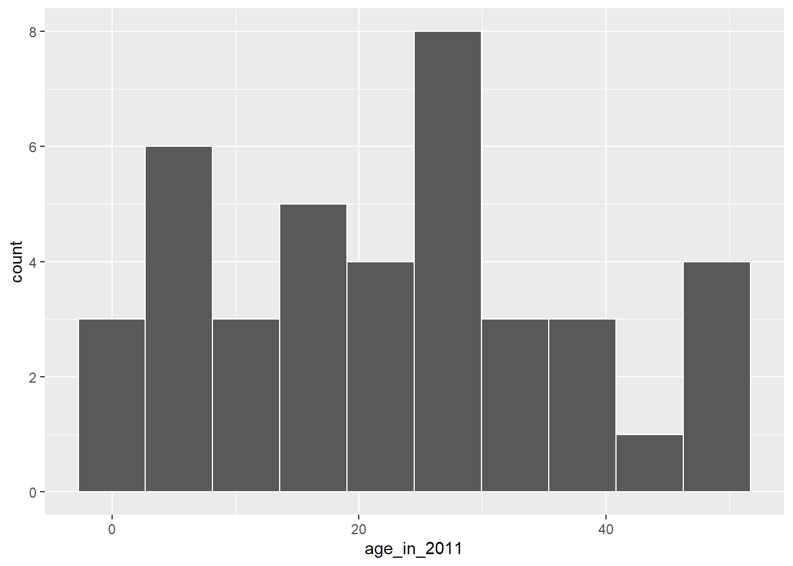
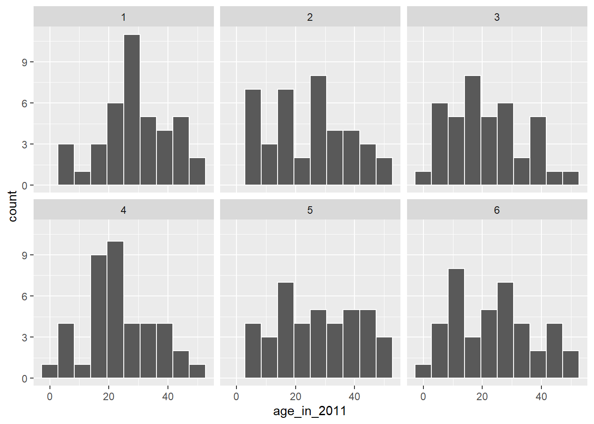

Bootstrapping
The moderndive package contains a sample of 40 pennies collected and minted in the United States. Let's explore this sample data first:
orig_pennies_sample# A tibble: 40 x 2
year age_in_2011
<dbl> <dbl>
1 2005 6
2 1981 30
3 1977 34
4 1992 19
5 2005 6
6 2006 5
7 2000 11
8 1992 19
9 1988 23
10 1996 15
# ... with 30 more rows
# i Use `print(n = ...)` to see more rowsThe orig_pennies_sample data frame has rows corresponding to a single penny with two variables:
yearof minting as shown on the penny andage_in_2011giving the years the penny had been in circulation in 2011 as an integer, e.g. 15, 2, etc.
Suppose we are interested in understanding some properties of the mean age of all US pennies from this data collected in 2011. How might we go about that? Let's begin by understanding some of the properties of orig_pennies_sample using data wrangling from Week 2 and data visualization from Week 1.
Exploratory data analysis
First, let's visualize the values in this sample as a histogram:
ggplot(orig_pennies_sample, aes(x = age_in_2011)) +
geom_histogram(bins = 10, color = "white")
We see a roughly symmetric distribution here that has quite a few values near 20 years in age with only a few larger than 40 years or smaller than 5 years. If orig_pennies_sample is a representative sample from the population, we'd expect the age of all US pennies collected in 2011 to have a similar shape, a similar spread, and similar measures of central tendency like the mean.
So where does the mean value fall for this sample? This point will be known as our point estimate and provides us with a single number that could serve as the guess to what the true population mean age might be. Recall how to find this using the dplyr package:
x_bar <- orig_pennies_sample %>%
summarize(stat = mean(age_in_2011))
x_bar# A tibble: 1 x 1
stat
<dbl>
1 25.1We've denoted this sample mean as \(\bar{x}\), which is the standard symbol for denoting the mean of a sample. Our point estimate is, thus, \(\bar{x} = 25.1\). Note that this is just one sample providing just one sample mean to estimate the population mean. To construct a confidence interval (and to do any sort of statistical inference for that matter) we need to know about the sampling distribution of this sample mean, i.e. how would its values vary if many samples of the same size were drawn from the same population.
The process of bootstrapping allows us to use a single sample to generate many different samples that will act as our way of approximating a sampling distribution using a created bootstrap distribution instead. We will "pull ourselves up by our bootstraps" (as the saying goes in English, see here) using a single sample (orig_pennies_sample) to get an idea of the sampling distribution of the sample mean.
The Bootstrapping Process
Bootstrapping uses a process of sampling with replacement from our original sample to create new bootstrap samples of the same size as our original sample. We can use the rep_sample_n() function in the infer package to explore what one such bootstrap sample would look like. Remember that we are randomly sampling from the original sample here with replacement and that we always use the same sample size for the bootstrap samples as the size of the original sample (orig_pennies_sample).
bootstrap_sample1 <- orig_pennies_sample %>%
rep_sample_n(size = 40, replace = TRUE, reps = 1)
bootstrap_sample1# A tibble: 40 x 3
# Groups: replicate [1]
replicate year age_in_2011
<int> <dbl> <dbl>
1 1 1991 20
2 1 2005 6
3 1 1964 47
4 1 1983 28
5 1 2000 11
6 1 1983 28
7 1 1979 32
8 1 2006 5
9 1 1970 41
10 1 1964 47
# ... with 30 more rows
# i Use `print(n = ...)` to see more rowsLet's visualize what this new bootstrap sample looks like:
ggplot(bootstrap_sample1, aes(x = age_in_2011)) +
geom_histogram(bins = 10, color = "white")
We now have another sample from what we could assume comes from the population of interest. We can similarly calculate the sample mean of this bootstrap sample, called a bootstrap statistic.
bootstrap_sample1 %>%
summarize(stat = mean(age_in_2011))# A tibble: 1 x 2
replicate stat
<int> <dbl>
1 1 22.7We'll come back to analyzing the variation in the values of different bootstrap samples' statistics shortly. But first, let's recap what was done to get to this single bootstrap sample using a tactile explanation:
- First, pretend that each of the 40 values of
age_in_2011inorig_pennies_samplewere written on a small piece of paper. Recall that these values were 6, 30, 34, 19, 6, etc. - Now, put the 40 small pieces of paper into a receptacle such as a baseball cap.
- Shake up the pieces of paper.
- Draw "at random" from the cap to select one piece of paper.
- Write down the value on this piece of paper. Say that it is 28.
- Now, place this piece of paper containing 28 back into the cap.
- Draw "at random" again from the cap to select a piece of paper. Note that this is the sampling with replacement part since you may draw 28 again.
- Repeat this process until you have drawn 40 pieces of paper and written down the values on these 40 pieces of paper. Completing this repetition produces ONE bootstrap sample.
If you look at the values in bootstrap_sample1, you can see how this process plays out. We originally drew 28, then we drew 11, then 7, and so on. Of course, we didn't actually use pieces of paper and a cap here. We just had the computer perform this process for us to produce bootstrap_sample1 using rep_sample_n() with replace = TRUE set.
The process of sampling with replacement is how we can use the original sample to take a guess as to what other values in the population may be. Sometimes in these bootstrap samples, we will select lots of larger values from the original sample, sometimes we will select lots of smaller values, and most frequently we will select values that are near the center of the sample. Let's explore what the distribution of values of age_in_2011 for six different bootstrap samples looks like to further understand this variability.
six_bootstrap_samples <- orig_pennies_sample %>%
rep_sample_n(size = 40, replace = TRUE, reps = 6)ggplot(six_bootstrap_samples, aes(x = age_in_2011)) +
geom_histogram(bins = 10, color = "white") +
facet_wrap(~ replicate)
We can also look at the six different means using dplyr syntax:
six_bootstrap_samples %>%
group_by(replicate) %>%
summarize(stat = mean(age_in_2011))# A tibble: 6 x 2
replicate stat
<int> <dbl>
1 1 29.6
2 2 24.4
3 3 21.8
4 4 23.8
5 5 27.9
6 6 24.2Instead of doing this six times, we could do it 1000 times and then look at the distribution of stat across all 1000 of the replicates. This sets the stage for the infer R package (see documentation here or the "Cheat Sheet" on the DA Moodle page) that helps users perform statistical inference such as confidence intervals and hypothesis tests using verbs similar to what you've seen with dplyr. In the next section we'll walk through setting up each of the infer verbs for confidence intervals using this orig_pennies_sample example, while also explaining the purpose of the verbs in a general framework.